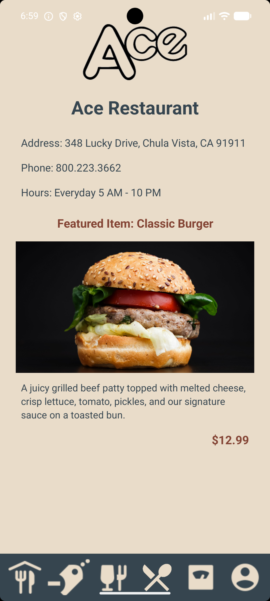
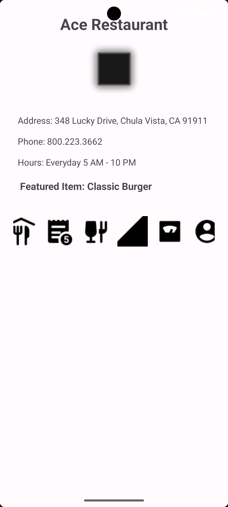
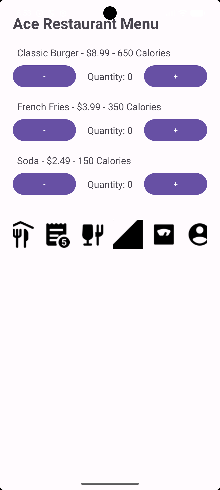
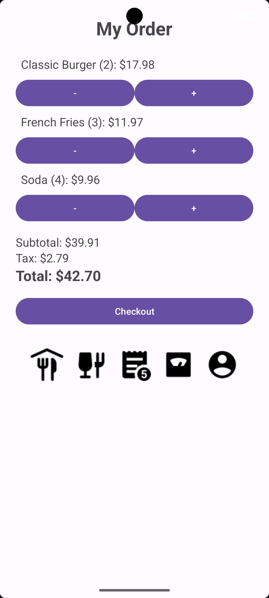
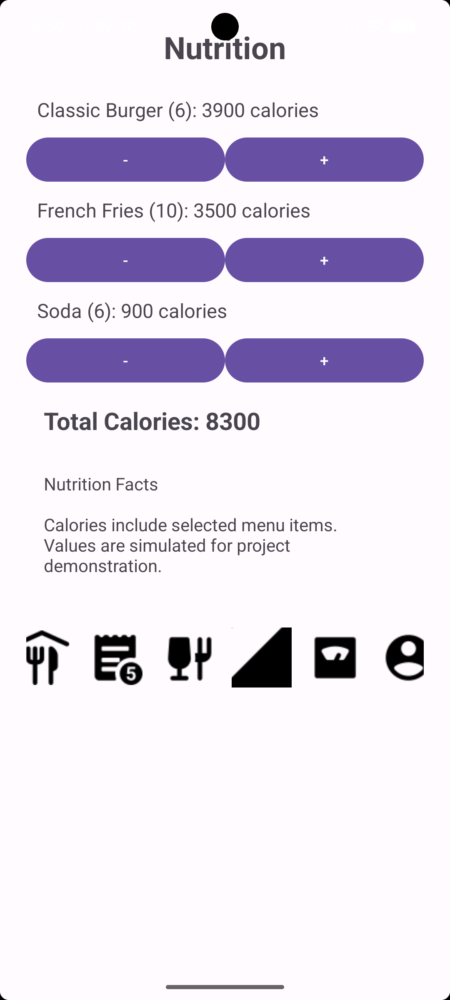
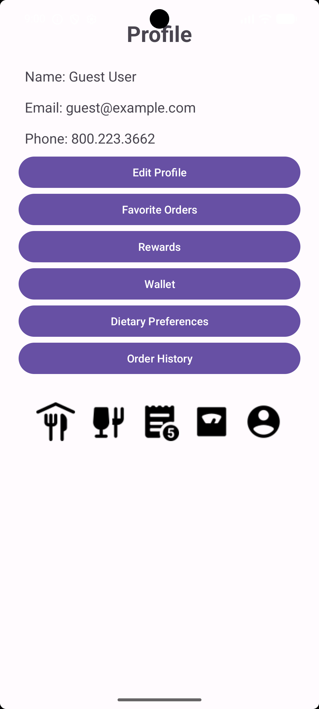
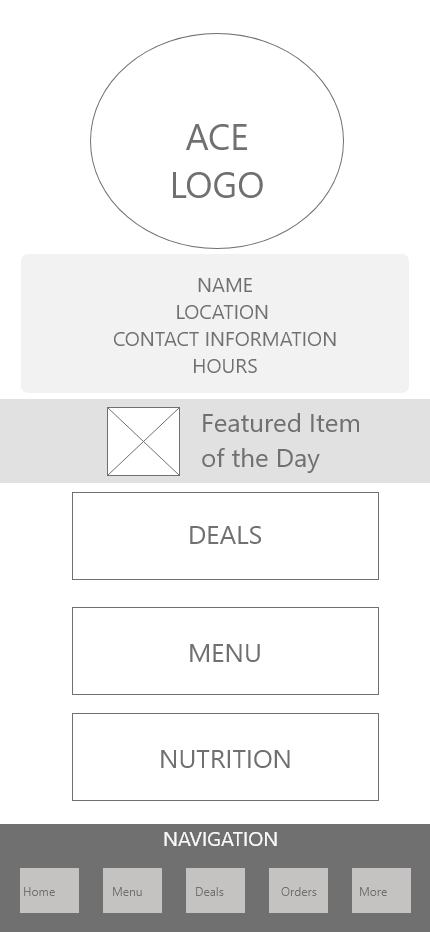

Browse
A categorized restaurant menu that makes food easy to locate.
Student project · UX/UI Design · Android Development
A functional Android ordering experience that helps restaurant customers browse a categorized menu, build an order, review pricing, and monitor nutritional information.

My role
UX/UI designer and Android developer
Tools
Android Studio, Java, Android SDK
Focus
Mobile ordering, navigation, calculations, accessibility
01
Ace Restaurant is an Android mobile application designed to help customers browse a categorized menu, build an order, review pricing, and monitor nutritional information.
The project combined visual design, user-experience principles, business requirements, and functional application development.
02
I designed and developed the application using Java and Android Studio.
03
Restaurant customers need to find menu items, understand prices and nutritional information, and manage an order without navigating a complicated interface.
A categorized restaurant menu that makes food easy to locate.
Item descriptions, prices, and calorie information presented clearly.
Simple controls for adding, removing, and changing quantities.
A calorie counter and order totals that respond to user selections.
04
I created five connected areas supported by consistent bottom navigation.
05
The strongest screen sequence shows how a customer moves from restaurant information to selecting food, reviewing an order, checking calories, and managing a profile.





06
I translated the initial screen designs into a functional Android application using Java and Android Studio.
Design process
Explore how the Ace Restaurant application developed from its initial structure through functional drafts and final interface designs.

Use the arrow buttons or your keyboard’s left and right arrow keys.
Users can adjust menu quantities, review dynamically calculated order prices, track total calories, and navigate between restaurant and profile features through a consistent interface.
07
Familiar menu categories help users locate food without reviewing one long list.
The same primary navigation appears throughout the application, reducing cognitive load.
Prices, calories, quantities, taxes, and totals stay visible to support informed choices.
Quantity changes and other actions produce immediate visual updates or confirmations.
The interface was designed for Android devices with different screen sizes and resolutions.
08
The application was developed in Java with Android Studio. Separate activities organize the Home, Menu, Orders, Nutrition, and Profile functions.
Interactive controls update item quantities, order totals, sales tax, and calorie totals in response to user selections.
09
The design emphasizes readable text, clearly labeled controls, organized layouts, consistent interactions, and minimal collection of personal information.
Users can review the financial and nutritional effects of their selections before completing an order.
10
The completed application met the assignment's business and functionality requirements. Instructor feedback confirmed that it functioned successfully, demonstrated effective interface design, followed ethical programming practices, and included professional code documentation.